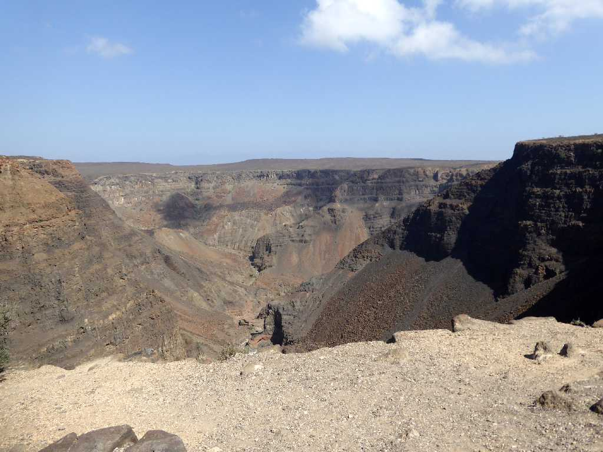
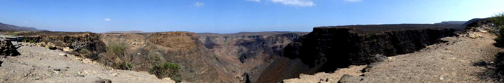
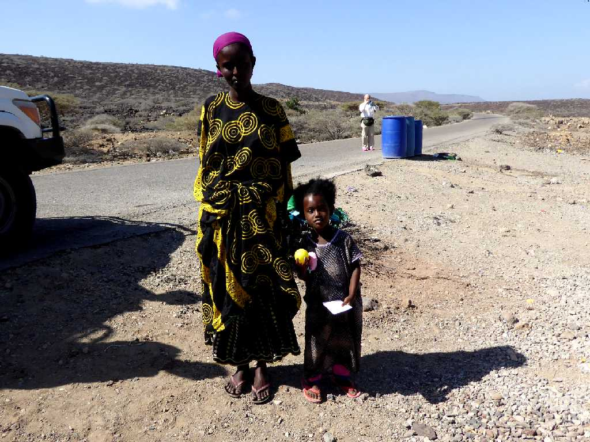
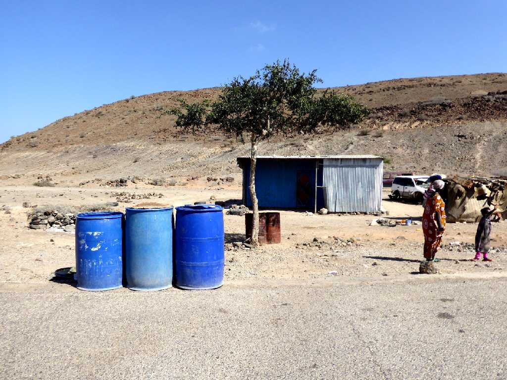
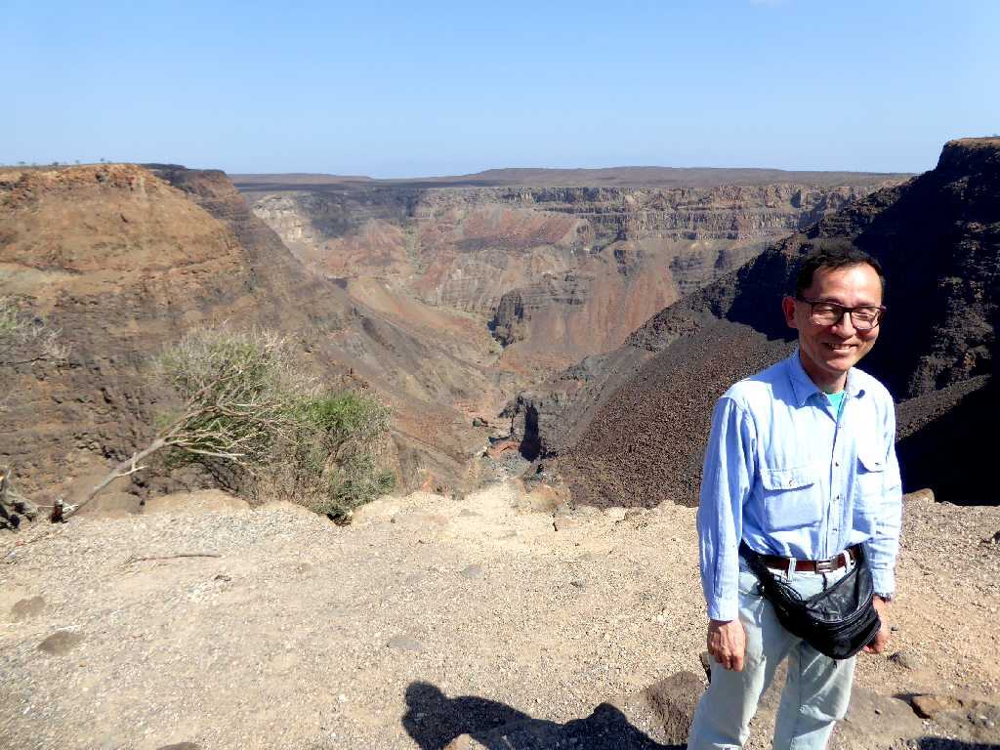

Canyon Great Rift Valley
アフリカ大地溝帯はアフリカプレートが陸上で東西に開く地球の割れ目で世界最大の地溝と云われている

Canyon Great Rift Valley
アフリカ大地溝帯は幅５０ｋｍ全長７,０００ｋｍにおよびアフリカ最低地が年間５ｃｍほど形成され将来は紅海のように海となる見込み

Village Great Rift Valley
日本のジャイカの飲料水支援に感謝している村民

Village Great Rift Valley
日本のジャイカが手前の青い水タンクに飲料水を供給して生活支援をしている

January 17 2017 Great Rift Valley
AI解説